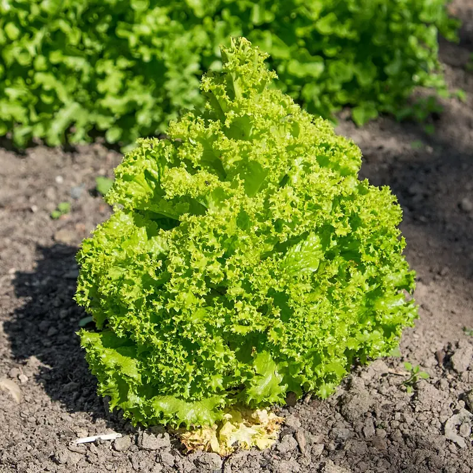

A plant's mature spread must fit its allocated area.
Mechanism: Geometry.
Evidence: settled without a trial - arithmetic.
remedy
Reduce plant count, or choose a bush cultivar group.

A first-season walkthrough - pick a few forgiving crops, count from your frost dates, start what needs a head start, harden it off, and get it in the ground at the right time.
What you need
Your first bed is easier than the internet makes it look. The trick is to plant a few forgiving crops and let your frost dates tell you when. Here is the whole sequence on a small bed, with three crops that between them teach the three ways a plant starts: a fast leaf crop you scatter now, a big-seeded crop you push straight into the ground, and one warm-season crop you give a head start indoors.
Choose a bed in full sun (six to eight hours) that you can reach without stepping on. Then pick three easy crops: radish or lettuce (a fast cool-season crop you sow direct), bush beans (a big seed that goes straight in the ground), and one tomato (a warm-season crop worth starting early indoors). Don't crowd them - every plant needs its mature spread, and the planner will hold you to it:
Mechanism: Geometry.
Evidence: settled without a trial - arithmetic.
Reduce plant count, or choose a bush cultivar group.
Everything from here is timed off your last spring frost. Get it from the planner (it comes with your ZIP), and remember it is an average, not a guarantee. The frost dates guide explains how to read the odds. You'll count backward from it for the tomato and forward for the beans.
A tomato needs a running start to ripen in a normal season, so it goes on a windowsill or under a light several weeks before it can move outside - the planner schedules the exact head start:
Mechanism: A frost-tender crop with a long days-to-maturity cannot mature if it is only direct-sown after the last frost — the frost-free window is too short. A head start under cover buys the weeks the season lacks; the seedling is set out only once frost has passed — the transplant date is still frost-gated.
Evidence: confirmed against 2 sources in the research-based literature.
University of Minnesota Extension, 'Starting seeds indoors', extension.umn.edu/planting-and-growing-guides/starting-seeds-indoors: seed-starting chart gives tomato '5-6 weeks' and pepper and eggplant '9 weeks' before the outdoor planting date (warm crops set out after the last frost). Read 2026-07-19 (LLM-summarised); read by the maintainer 2026-07-25, which is the read that promoted this rule. Note what the corpus's per-crop values do with the sources: tomato 6 sits at the top of Minnesota's '5-6 weeks' and inside Illinois's '6-8'; pepper and eggplant 8 sit BELOW Minnesota's '9 weeks' and at the top of Illinois's '6-8'. They are a reconciliation of two published ranges, not a figure either source prints.
University of Illinois Extension, 'When should I start my seeds?' (2023-02-10), extension.illinois.edu/blogs/good-growing/2023-02-10-when-should-i-start-my-seeds: peppers, tomatoes, and eggplant started '6-8 weeks before the last frost'. Read 2026-07-19.
Sow it in a small pot, keep it warm and well-lit, and let it grow while it's still too cold outside.
Radish and lettuce are hardy - they want the cool. Sow them straight into the bed a couple of weeks before your last frost, a quarter-inch deep, and thin the seedlings to their spacing once they're an inch or two tall (snip, don't pull). This is the hardy-crop offset in action:
Mechanism: Cold hardiness. Hardy crops tolerate hard frost and half-hardy crops tolerate light frost, so they can occupy the ground weeks before frost-tender crops are allowed in. The offset is measured from the last spring frost.
Evidence: confirmed against 4 sources in the research-based literature.
University of Illinois Extension, 'Time Your Vegetable Plantings by Cold Hardiness' (2018-03-26), extension.illinois.edu/blogs/ilriverhort/2018-03-26-time-your-vegetable-plantings-cold-hardiness: very hardy vegetables 'withstand freezing temperatures and hard frosts without injury' (planted earliest in spring); frost-tolerant vegetables 'can withstand light frosts, but not freezing temperatures' (planted a couple of weeks later). LLM-summarised from a read of the page; it establishes the CATEGORIES but states no week offsets.
Colorado State Univ. Extension, GardenNotes #720, 'Vegetable Planting Guide', extension.colostate.edu/resource/vegetable-planting-guide (read 2026-07-25): hardy vegetables go in 'As early as 2-4 weeks before the date of the average last spring frost'; semi-hardy 'As early as 0-2 weeks before the date of the average last spring frost'; tender from seed 'around the date of the average last spring frost'; very tender 'Typically 2+ weeks after'. This is the source that states the offsets in weeks.
Where this rule sits in that range: hardy at 3 weeks is mid-range of CSU's 2-4. Half-hardy at 2 weeks is the EARLIEST EDGE of CSU's 0-2 - the most aggressive planting CSU sanctions, not the middle of it. The rule is inside published guidance at both ends, but it leans early on the half-hardy side and a gardener following it in a cold spring is taking that boundary.
Do not import an offset from another publication's hardiness scheme without checking the category names: CSU has no 'very hardy' tier, so a '4-6 weeks before frost' figure written against a four-tier scheme does not describe CSU's 'hardy'. Categories are not comparable across sources.
Once the danger of frost has passed and the soil has warmed, push the bean seeds an inch into the ground where they'll grow - big-seeded crops resent transplanting and catch up fine from a direct sow. Move the tomato out the same week: plant it deeper than it grew in its pot, buried up to its first leaves, because a tomato grows roots all along a buried stem. Water everything in.
Radish and lettuce are fast and finish all at once, so re-sow a short row every couple of weeks instead of all on one day - that's succession sowing, and it turns one glut into a steady harvest:
Mechanism: Sowing the same crop in batches two to three weeks apart staggers when each batch matures, so the harvest arrives as a continual succession instead of one glut. It pays off only for short-DTM crops, whose quick turnaround lets several sowings ripen within a single season.
Evidence: confirmed against 1 source in the research-based literature.
Penn State Extension Master Gardener (Lancaster Co.), 'Succession Planting', extension.psu.edu/programs/master-gardener/counties/lancaster/idea-gardens/the-raised-bed-garden/succession-planting (read 2026-07-11): 'Succession planting extends the vegetable harvest'; 'Plant one crop, then approximately 2 weeks (or more) later, plant the same crop in another area to have a continual harvest.'
Sun, the right timing off your frost dates, spacing the plants can live with, and a habit of re-sowing the fast crop. Log what you planted and where - next year that record is what lets the crop rotation move each family to fresh ground.
The rules this guide leans on:
Plants in this guide: Lettuce